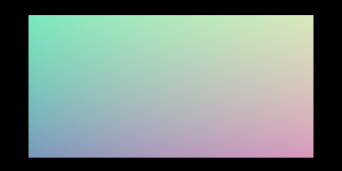
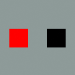

English · 한국어
| Component | Minimum |
|---|---|
| Blender | 5.2.x LTS (Python 3.13) |
| macOS | 14+ on Apple silicon (Metal GPU backend) |
| Windows / Linux | OpenCL-capable GPU or CPU |
SuperLuxCore-Latest-*.zip from the
rolling release:
windows_x64, linux_x64, macos_arm64 or
macos_x64. Each platform ZIP bundles its engine wheel and the add-on.The public bundles currently pair add-on 2.11.13 with
pysuperluxcore 2.11.13 / Python 3.13; v2.11.13 is
the current versioned GitHub release. The packaging workflow uses
Blender 5.2.1. latest is a rolling pre-release and is not a
production-qualified versioned release. Restart Blender after upgrading:
updating Python source alone does not replace an already-loaded native module.
Headless installation uses the same Blender extension installer:
blender --background --command extension install-file \
--repo user_default --enable SuperLuxCore-Latest-macos_arm64.zipFor an isolated CI profile, create the directories referenced by
BLENDER_USER_CONFIG, BLENDER_USER_SCRIPTS and
BLENDER_USER_EXTENSIONS before launching Blender.
# Blender scripting console / Text Editor
import bpy
import pysuperluxcore
print(pysuperluxcore.Version()) # 검증한 현재 배포물: 2.11.13
bpy.context.scene.render.engine = "SUPERLUXCORE"
print(bpy.context.scene.superluxcore.config.engine)The 2.11.13 release bundles passed all four platform packaging gates and source-commit attestation verification. The final Apple-silicon ZIP (SHA-256 dccd7560eba995eb9b2790e2e09ae8408a25695d70a7d1fe087c6ee6462d2963) installed offline into a fresh Blender 5.2.1 profile and completed a 1280×720, 32-sample default spectral Metal render with an empty cache in 48.25 seconds including kernel builds. Windows, Linux and Intel Mac runtime rendering remain unverified on their native hardware. See the deployment evidence and documented compatibility limits.
2.11.12 fixes the first GPU render with the default spectral
mode: the Metal shader compiler previously gave up on one oversized kernel
after 10+ minutes, so the render failed. The attestation-verified public
SuperLuxCore-2.11.12-macos_arm64.zip (SHA-256
c4eac3fa72a3f5dcc3296ca5dd714cffb99b4d82ba55e5691676ba6725281d57),
installed into a fresh Blender 5.2.1 profile with an empty kernel cache,
completed a spectral Metal render in 51 s including all kernel builds.
Later renders reuse the cached kernels.
The hash- and attestation-verified public 2.11.11 Apple-silicon wheel passed 328 actual CPU/isolated Metal coordinate/math checks, 15 camera-reference renders and nine large-film RGB/alpha renders in factory-startup Blender 5.2.1. Coverage includes HDR/tiny-input boundaries, custom Generated texture space, material splits, live edits, scene/proxy archives, centered/shifted orthographic/perspective and full equirectangular cameras, and opaque/transparent/half-covered 1024×512 films. The matching offline ZIP embeds the same native wheel. Native CPU workers were disabled for the Metal runs.
A fresh, separate Blender profile installed the public offline ZIP
with PIP_NO_INDEX=1, without downloading the engine.
Both the add-on and compiled-module paths were verified inside that
profile; the same 328 checks, 15 camera renders and nine large-film
renders passed. The bundle also rendered a genuine transparent Metal PNG.
See RGBA integrity, measured
Combined transfer buffers and the actual rendered image.
The earlier 2.11.10 panorama
remains labeled with its original artifact version.

The earlier 2.11.9 public bundle's raw EXR interior comparison with Cycles had maximum
absolute RGB errors 0.003421 on CPU and 0.007908
on Metal. This is a behavior and installation check, not bitwise parity,
a throughput benchmark or cross-vendor GPU certification.

This earlier 2.11.8 installation probe is an actual 128×128 bundle render using two cubes with emission strength
sin(pi/2) and sin(0). Both CPU and isolated Metal passed
the bright/dark image-region checks. It is a display-managed installation
probe, not a photorealistic example, throughput benchmark or bitwise-parity claim.
Metal is used automatically on Apple silicon (device type
METAL_GPU). Vulkan requires a bundled toolchain — see
Troubleshooting → Vulkan.
CPU is always available and is the reference implementation.